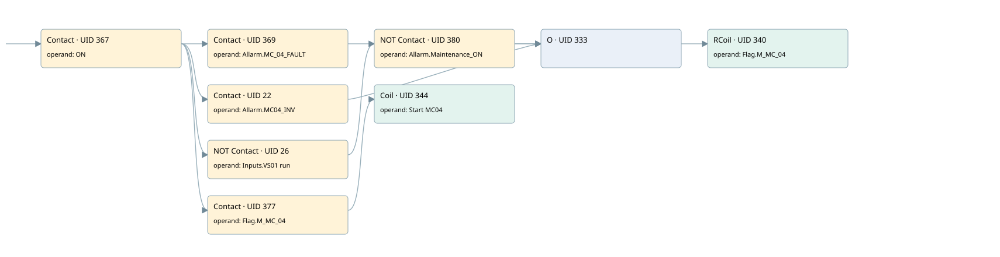

mc04
motors 1 · 검색 색인 순서 12 · 원본 내부 NID 추정 11
백업 PLF 원본의 2788439 바이트 위치에서 복원한 XML. 검색 문서 1941의 객체 키 161022009011000000000000와 연결했다. 이름 해석 8/8개. 남은 RefId는 상수 또는 미해석 참조다.
연결 구조 다시 그리기
원본 Part/PCon/Wire를 이용한 연결도다. TIA 화면의 래더 배치 또는 실행 결과를 재현한 그림은 아니다. 핀 연결은 아래 표와 원본 XML을 기준으로 읽는다. 노드 위에 마우스를 두면 피연산자 이름을 볼 수 있다.

접점·코일·블록과 피연산자
| Part UID | Gate | Negated 핀 | 연결 피연산자 |
|---|---|---|---|
| 367 | Contact | operand = ON | |
| 369 | Contact | operand = Allarm.MC_04_FAULT | |
| 22 | Contact | operand = Allarm.MC04_INV | |
| 26 | Contact | operand | operand = Inputs.VS01 run |
| 380 | Contact | operand | operand = Allarm.Maintenance_ON |
| 333 | O | ||
| 340 | RCoil | operand = Flag.M_MC_04 | |
| 377 | Contact | operand = Flag.M_MC_04 | |
| 344 | Coil | operand = Start MC04 |
접점 경로를 펼친 조건식
Contact·O/A·비교기의 원본 연결을 읽기 쉽게 펼친 보조 해석이다. POWER는 전원 레일 시작을 뜻한다. 호출 블록·에지·타이머의 내부 동작과 다중 쓰기 순서는 이 표로 실행 검증하지 않았다. 미해석 핀과 RefId는 원문 연결표에서 확인한다.
| UID | 동작 | 대상 | 원본 접점 경로 | 내용 |
|---|---|---|---|---|
| 340 | RCoil | Flag.M_MC_04 | ((ON AND Allarm.MC_04_FAULT) OR (ON AND Allarm.MC04_INV) OR ((ON AND NOT [Inputs.VS01 run]) AND NOT [Allarm.Maintenance_ON])) | 조건 성립 시 Reset |
| 344 | Coil | Start MC04 | (ON AND Flag.M_MC_04) | 조건에 따른 Coil 기록 |
원본 배선 연결
| Wire UID | 동일 Wire 연결 끝점 |
|---|---|
| 379 | Powerrail {} ↔ Part 367.in |
| 353 | ORef 345 (ON) ↔ Part 367.operand |
| 368 | Part 367.out ↔ Part 369.in ↔ Part 22.in ↔ Part 26.in ↔ Part 377.in |
| 354 | ORef 346 (Allarm.MC_04_FAULT) ↔ Part 369.operand |
| 370 | Part 369.out ↔ Part 333.in1 |
| 21 | ORef 23 (Allarm.MC04_INV) ↔ Part 22.operand |
| 24 | Part 22.out ↔ Part 333.in2 |
| 25 | ORef 27 (Inputs.VS01 run) ↔ Part 26.operand |
| 28 | Part 26.out ↔ Part 380.in |
| 383 | ORef 381 (Allarm.Maintenance_ON) ↔ Part 380.operand |
| 29 | Part 380.out ↔ Part 333.in3 |
| 360 | Part 333.out ↔ Part 340.in |
| 362 | ORef 350 (Flag.M_MC_04) ↔ Part 340.operand |
| 363 | ORef 351 (Flag.M_MC_04) ↔ Part 377.operand |
| 378 | Part 377.out ↔ Part 344.in |
| 365 | ORef 352 (Start MC04) ↔ Part 344.operand |
식별자 해석 근거 8개
| ORef UID | RefId | 이름 | IdentXmlPart 파일 | 해석 방법 |
|---|---|---|---|---|
| 345 | 1 | ON | 0602-IdentXmlPart.xml | UID/RID + search-text + NID agreement |
| 346 | 62 | Allarm.MC_04_FAULT | 0604-IdentXmlPart.xml | UID/RID + search-text + NID agreement |
| 23 | 205 | Allarm.MC04_INV | 0604-IdentXmlPart.xml | UID/RID + search-text + NID agreement |
| 27 | 224 | Inputs.VS01 run | 0604-IdentXmlPart.xml | UID/RID + search-text + NID agreement |
| 381 | 6 | Allarm.Maintenance_ON | 0604-IdentXmlPart.xml | UID/RID + search-text + NID agreement |
| 350 | 65 | Flag.M_MC_04 | 0604-IdentXmlPart.xml | UID/RID + search-text + NID agreement |
| 351 | 65 | Flag.M_MC_04 | 0604-IdentXmlPart.xml | UID/RID + search-text + NID agreement |
| 352 | 66 | Start MC04 | 0602-IdentXmlPart.xml | UID/RID + search-text + NID agreement |
검색 코드 보조 자료
참조 명칭을 찾기 위한 자료이며 실행 순서나 AND/OR 관계는 위 연결표로 확인한다.
"on" "allarm".mc_04_fault "flag".m_mc_04 "allarm".mc04_inv "inputs"."vs01 run" "allarm".maintenance_on "flag".m_mc_04 "start mc04"